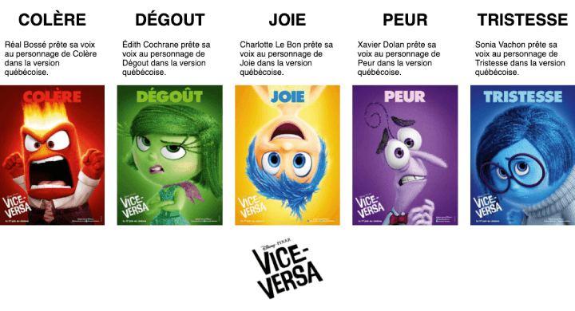

Pour cet exercice vous et votre coéquipier devez créer un microsite permettant de présenter les protagonistes du film Vice Versa de Pixar.
Votre coéquipier a conçu un mockup HTML sur CodePen, ainsi que le thème WordPress du site. Il compte maintenant sur vous pour le rendre dynamique dans WordPress via son Rest API.
Aperçu du résultat 👇

Matériel
Pen de départ
Médias 🖼️
data-vice-versa.xml
Installation & migration
Installez en local une copie en Français du Canada de WordPress pour votre client.
Ajoutez l'extension Custom Post Type UI.
Installez le thème réalisé par votre collègue.
Importez la structure du Post Personnalisé intitulé "Émotions" à l'aide de l'extrait de code se trouvant à la fin de ce bloc.
Importez les données des pages à l'aide du fichier XML en pièce jointe.<
{
"emotions": {
"name": "emotions",
"label": "\u00c9motions",
"singular_label": "\u00c9motion",
"description": "",
"public": "true",
"publicly_queryable": "true",
"show_ui": "true",
"show_in_nav_menus": "true",
"delete_with_user": "false",
"show_in_rest": "true",
"rest_base": "",
"rest_controller_class": "",
"has_archive": "false",
"has_archive_string": "",
"exclude_from_search": "false",
"capability_type": "post",
"hierarchical": "false",
"rewrite": "true",
"rewrite_slug": "",
"rewrite_withfront": "true",
"query_var": "true",
"query_var_slug": "",
"menu_position": "",
"show_in_menu": "true",
"show_in_menu_string": "",
"menu_icon": "dashicons-admin-users",
"supports": [
"title",
"editor",
"thumbnail"
],
"taxonomies": [],
"labels": {
"menu_name": "\u00c9motions",
"all_items": "Toutes les \u00e9motions",
"add_new": "Ajouter une nouvelle",
"add_new_item": "Ajouter une \u00e9motion",
"edit_item": "Modifier une \u00e9motion",
"new_item": "Nouvelle \u00e9motion",
"view_item": "Voir l'\u00e9motion",
"view_items": "Voir les \u00e9motions",
"search_items": "Rechercher dans les \u00e9motions",
"not_found": "Aucune \u00e9motion trouv\u00e9e",
"not_found_in_trash": "Aucune \u00e9motion dans la corbeille",
"parent": "Parent de \u00e9motion:",
"featured_image": "Image de pr\u00e9sentation de \u00e9motion",
"set_featured_image": "Configurer image de pr\u00e9sentation de l'\u00e9motion",
"remove_featured_image": "Enlever l'image de pr\u00e9sentation de \u00e9motion",
"use_featured_image": "Utiliser comme image de pr\u00e9sentation pour cette \u00e9motion",
"archives": "Archive d'\u00e9motions",
"insert_into_item": "Ins\u00e9rer dans les \u00e9motions",
"uploaded_to_this_item": "T\u00e9l\u00e9verser vers cette \u00e9motion",
"filter_items_list": "Filtrer la liste des \u00e9motions",
"items_list_navigation": "\u00c9motions list navigation",
"items_list": "\u00c9motions list",
"attributes": "\u00c9motions attributes",
"name_admin_bar": "\u00c9motion",
"item_published": "\u00c9motion publi\u00e9e",
"item_published_privately": "\u00c9motion published privately.",
"item_reverted_to_draft": "\u00c9motion reverted to draft.",
"item_scheduled": "\u00c9motion scheduled",
"item_updated": "\u00c9motion updated.",
"parent_item_colon": "Parent de \u00e9motion:"
},
"custom_supports": ""
}
}
Affichage
Utilisez le Rest API de WordPress afin de récupérer tous les posts de type "émotions" et ordonner les en ordre alphabétique.
Pour chacun de ces posts, recréez une carte en vous basant sur le Pen en pièce jointe dans le fichier home.php.
Notes de cours 📚
REST API
Accéder aux contenus en JavaScript via des JSON